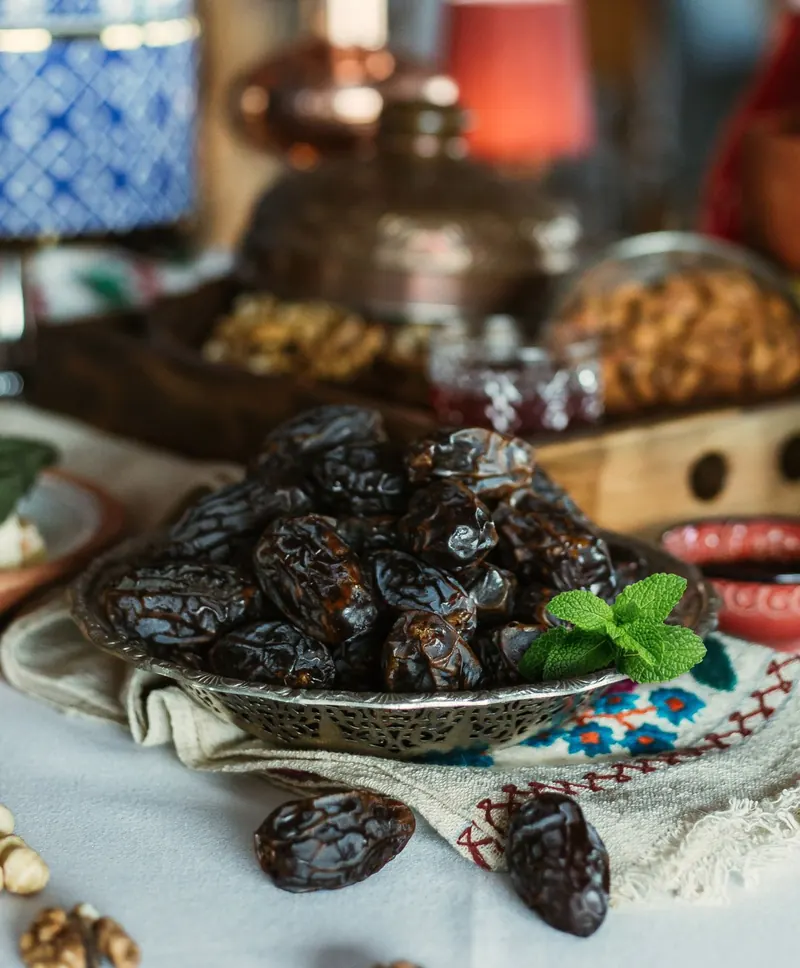
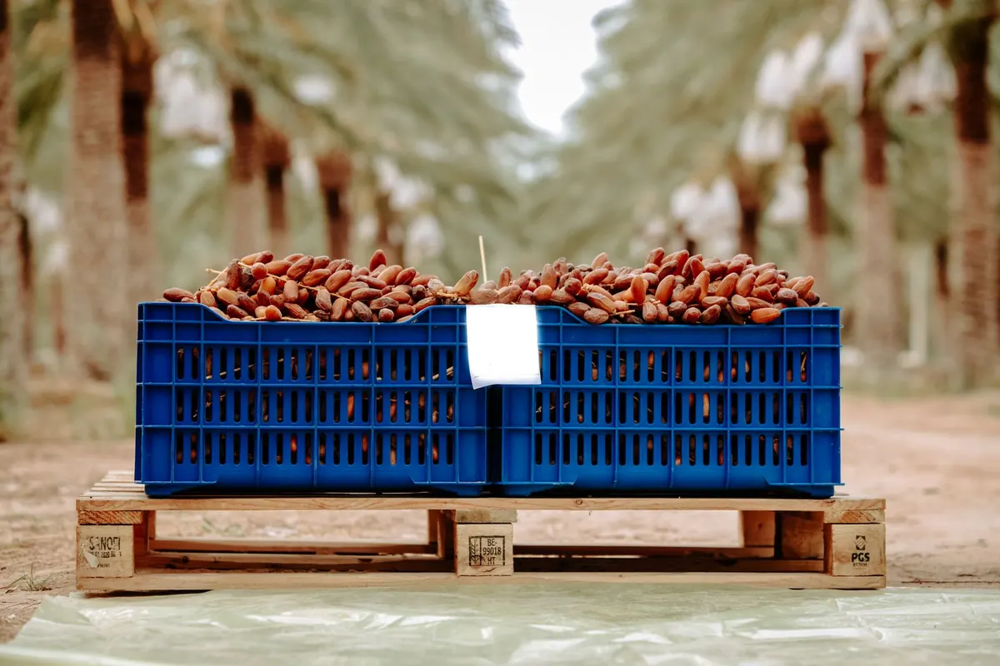
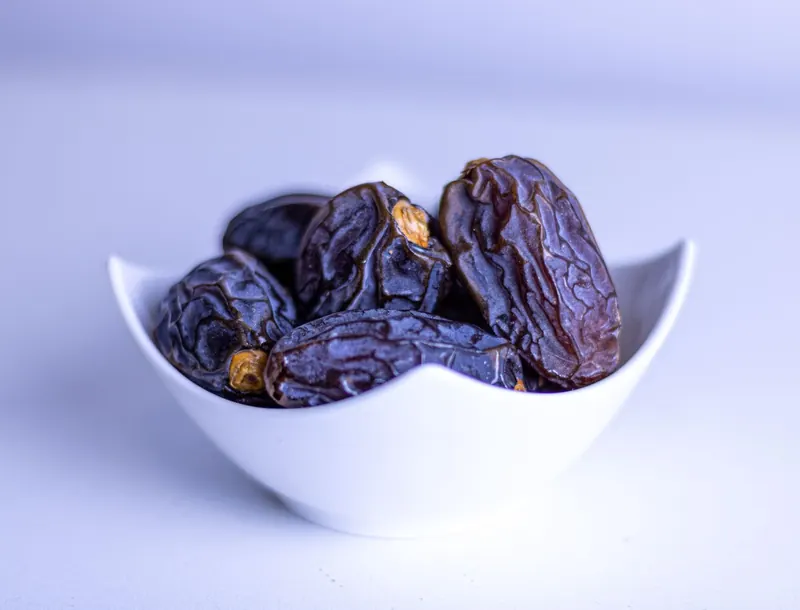

Fenêtre de récolte
Généralement de fin juillet à septembre à Madinah, selon les conditions de l'année. Les fruits sont cueillis au stade tamr (datte mûre et sèche).
Fournisseur grossiste de dattes Ajwa · B2B
Fournisseur de dattes Ajwa en gros pour importateurs, distributeurs, détaillants et grossistes : dattes Ajwa authentiques de Madinah, sélectionnées et conditionnées pour la revente, avec des prix de gros compétitifs.
Réponse sur WhatsApp : prix, disponibilités et conditions d'expédition selon votre volume.

Ajwa · عجوةMadinah
L'Ajwa & son origine
L'Ajwa est la datte emblématique de Madinah (Al-Madinah Al-Munawwarah), en Arabie saoudite. Petite à moyenne, de couleur brun très foncé à presque noire, elle offre une chair tendre et une douceur délicate, moins sucrée que bien d'autres variétés.
Très recherchée pour sa valeur culturelle et spirituelle, notamment pendant le Ramadan, le Hajj et la Omra, la datte Ajwa authentique est cultivée presque exclusivement dans la région de Madinah. C'est pourquoi l'origine et la sélection comptent autant pour les acheteurs professionnels.
Des dattes Ajwa de Madinah, avec l'origine et les documents disponibles échangés avant chaque commande.
Tri des fruits selon l'aspect, la taille et la texture, pour des lots homogènes adaptés à la revente.
Conditionnement et stockage au froid pour préserver la texture tendre et la couleur sombre de l'Ajwa.
Saisonnalité
À Madinah, l'Ajwa se récolte généralement de la fin de l'été au début de l'automne : la saison démarre vers fin juillet, la récolte principale a lieu en général en août et se poursuit en septembre. Grâce au stockage au froid, les dattes Ajwa restent disponibles en gros toute l'année.
Disponible toute l'année pour les commandes de gros (stock conservé au froid)
Calendrier indicatif : les dates exactes varient chaque année selon la météo et les vergers. Confirmez la disponibilité du moment sur WhatsApp.
Généralement de fin juillet à septembre à Madinah, selon les conditions de l'année. Les fruits sont cueillis au stade tamr (datte mûre et sèche).
Le cœur de la saison, en général en août, offre la plus large sélection de fruits frais de récolte : le bon moment pour réserver vos volumes de nouvelle récolte.
Bien conditionnée et stockée au froid, l'Ajwa conserve sa texture et sa couleur, ce qui permet un approvisionnement régulier en dehors de la récolte.

La demande augmente fortement avant le Ramadan, dont la date avance chaque année, ainsi qu'aux périodes du Hajj et de la Omra. Pour ces périodes, planifiez vos commandes de gros à l'avance.
Vérifier la disponibilitéProduits & conditionnements
Des formats pensés pour l'importation, la distribution et la vente au détail. Poids, calibres et quantités sont définis avec vous selon votre marché.

Dattes Ajwa en vrac, en cartons export, pour la revente au poids, la distribution ou le reconditionnement.
Commander en grosUn conditionnement qui protège la fraîcheur et la texture tendre de l'Ajwa, pratique pour les longues chaînes de distribution.
Demander un devisBoîtes et sachets prêts à vendre pour épiceries, supermarchés, boutiques en ligne et coffrets cadeaux.
Demander un devisVos dattes Ajwa sous votre propre marque : emballage et étiquetage définis ensemble, sur demande.
Contactez-nous sur WhatsAppPoids, calibres, quantités minimales et délais : communiqués sur devis, selon le conditionnement et la destination.
Pourquoi nous choisir
Nous travaillons pour les acheteurs B2B : importateurs, distributeurs, détaillants et grossistes qui ont besoin de dattes Ajwa premium en volume, régulièrement.
Commander en grosUne offre 100 % professionnelle : volumes de gros, commandes récurrentes et interlocuteur direct.
Un approvisionnement régulier toute l'année, appuyé sur le stockage au froid entre deux récoltes.
Des tarifs de gros compétitifs, adaptés à votre volume, au calibre et au conditionnement choisis.
Expédition à l'export sur demande, avec les documents nécessaires étudiés pour chaque commande.
Vrac, sous vide, formats détail ou marque blanche : un format pour chaque circuit de vente.
Devis, disponibilités et suivi de commande échangés directement avec vous sur WhatsApp.
Qualité & certifications
Pour la revente, chaque lot doit être homogène, propre et bien conservé. Voici ce que nous surveillons.
Origine Madinah annoncée clairement, avec les justificatifs disponibles transmis sur demande.
Sélection selon la taille, l'aspect de la peau et la texture, pour des lots réguliers.
Conditionnement propre et soigné, adapté au vrac comme aux formats détail.
Stockage au froid pour préserver la texture tendre et la couleur sombre jusqu'à l'expédition.
Certificats, analyses et documents d'export : nous les étudions avec vous sur WhatsApp, selon les exigences de votre pays et de vos clients.
Demander les documentsCe que recherchent les acheteurs
Les importateurs et distributeurs nous posent toujours les mêmes questions clés. Voici à quoi nous répondons dès le premier échange.
L'Ajwa étant une variété très demandée, l'authenticité est la première attente. Nous parlons origine et documents avant toute commande.
Des calibres et un aspect homogènes, d'une commande à l'autre, pour une revente sans mauvaise surprise.
Un approvisionnement fiable aux périodes de forte demande, grâce à la planification et au stock conservé au froid.
Marchés
Nous fournissons des acheteurs professionnels à travers le monde, pour des volumes de gros comme pour des commandes de distribution plus ciblées.
Export sur demande : destination, documents et conditions de livraison étudiés pour chaque commande.
Demander un devisQuestions fréquentes
Oui. Nous sommes fournisseur de dattes Ajwa en gros pour les professionnels : importateurs, distributeurs, détaillants, grossistes et marques. Contactez-nous sur WhatsApp en indiquant le volume, le conditionnement et la destination souhaités.
L'Ajwa est une variété de Madinah, en Arabie saoudite, où elle est cultivée presque exclusivement. Nous échangeons avec vous sur l'origine et les documents disponibles avant chaque commande.
À Madinah, l'Ajwa se récolte généralement de fin juillet à septembre, avec un pic en août en général. Les dates exactes varient selon les années et la météo.
Oui. Grâce au conditionnement et au stockage au froid, les dattes Ajwa restent disponibles en gros toute l'année, en dehors de la période de récolte.
Cartons vrac, barquettes sous vide, formats détail (boîtes, sachets) et marque blanche. Les poids et calibres sont définis avec vous selon votre marché.
Les prix et quantités minimales dépendent du calibre, du conditionnement, du volume et de la destination. Envoyez-nous votre demande sur WhatsApp pour recevoir un devis.
Oui, l'export est possible sur demande. Les documents, certificats et conditions de livraison sont étudiés pour chaque commande selon le pays de destination.
L'Ajwa est une datte petite à moyenne, brun très foncé à noire, à la chair tendre et à la peau finement ridée. Pour un achat en gros, l'aspect ne suffit pas : demandez toujours l'origine et les documents du lot.
Indiquez-nous le volume, le conditionnement et la destination : nous vous répondons sur WhatsApp avec une offre adaptée.
WhatsApp : +212 664 738 219